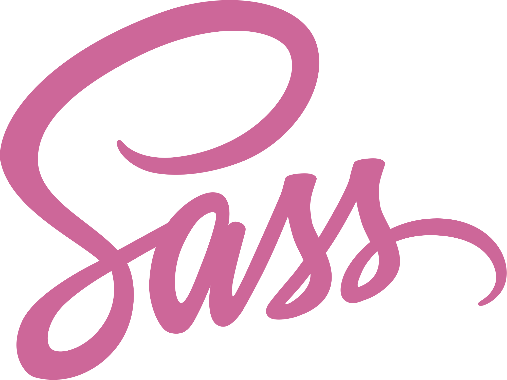

泰山職訓局
從零開始的網頁設計課程
轉職網頁開發人員 掌握就業必備職能
由淺入深學習技術 強化職場的競爭力

Html
超文本標記語言（英語：HyperText Markup
Language，簡稱：HTML）是一種用於建立網頁的標準標記語言。HTML是一種基礎技術，常與CSS、JavaScript一起被眾多網站用於設計網頁、網頁應用程式以及行動應用程式的使用者介面[3]。網頁瀏覽器可以讀取HTML檔案，並將其渲染成視覺化網頁。HTML檔案以「.htm」和「.html」為檔名，是一種純文字檔案，可以使用記事本、寫字板等文字編輯器進行編輯，也可以使用Frontpage、Dreamweaver等網頁製作軟體進行快速建立與編輯。HTML描述了一個網站的結構語意隨著線索的呈現，使之成為一種標記語言而非程式語言。
CSS3
階層式樣式表（英語：Cascading Style
Sheets，縮寫：CSS；又稱串樣式列表、級聯樣式表、串接樣式表、階層式樣式表）是一種用來為結構化文件（如HTML文件或XML應用）添加樣式（字型、間距和顏色等）的電腦語言，由W3C定義和維護。CSS3現在已被大部分現代瀏覽器支援，而下一版的CSS4仍在開發中。

JavaScript
JavaScript（通常縮寫為JS）是一門基於原型和頭等函式的多範式進階直譯程式語言[9][10]，它支援物件導向程式設計、指令式編程和函數式程式設計。它提供方法來操控文字、陣列、日期以及正規表示式等。不支援I/O，比如網路、儲存和圖形等，但這些都可以由它的宿主環境提供支援。它由Ecma透過ECMAScript實作語言的標準化[9]。目前，它被世界上的絕大多數網站所使用，也被世界主流瀏覽器（Chrome、Firefox、Safari和Opera）所支援。

JQuery
jQuery是一套跨瀏覽器的JavaScript函式庫，用於簡化HTML與JavaScript之間的操作。[2]約翰·雷西格（John Resig）在2006年1月的BarCamp
NYC上釋出了第一個版本。目前由Dave Methvin領導的團隊進行開發。全球前10,000個訪問最高的網站中，有65%使用了jQuery，是曾經最受歡迎的JavaScript函式庫[3][4]。

Bootstrap
Bootstrap（原名 Twitter Bootstrap）是一個免費開源的 CSS 框架，專注於響應式、行動優先的前端 Web 開發。它包含基於 HTML、CSS 和（可選）JavaScript
的設計模板，涵蓋排版、表單、按鈕、導航和其他介面元件。

Sass
Sass（英文全稱：Syntactically Awesome Stylesheets）是一個最初由Hampton Catlin設計並由Natalie
Weizenbaum開發的層疊樣式表語言。[3][4]在開發最初版本之後，Weizenbaum和Chris
Eppstein繼續通過SassScript來繼續擴充Sass的功能。SassScript是一個在Sass檔案中使用的小型手稿語言。
Sass
Vue.js（/vjuː/，簡稱Vue）是一個用於建立使用者介面的開源MVVM前端JavaScript框架，也是一個建立單頁應用的Web應用框架[4]。Vue.js由尤雨溪建立，由他和其他活躍的核心團隊成員維護[5]。